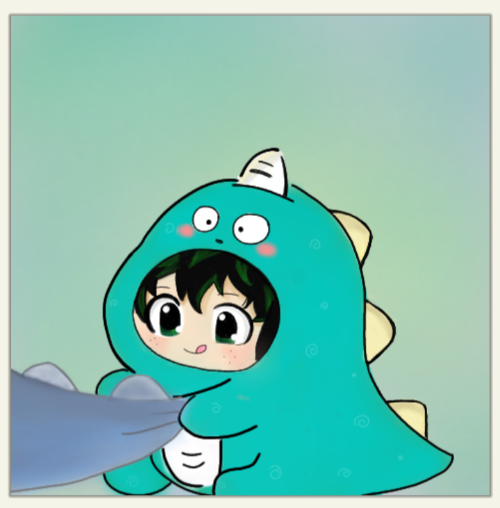
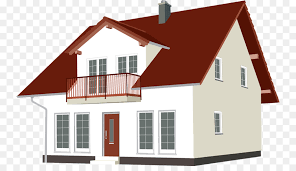
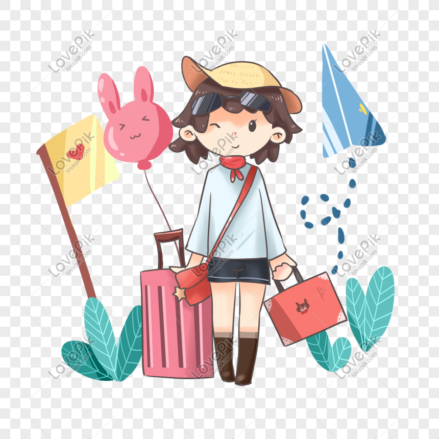
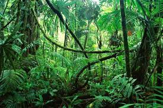

Las cosas que más me gustan
Las cosas que más me gustan en cuestión de comidas son:
- Tacos
- Enchiladas
- Pozole
- Tamales
- Hamburguesa
- Pizza
- Hot dogs
Las cosas que me gustan hacer con mis amigos es ver películas, jugar juegos de mesa y hablar de experiencias o planes a futuro que tenemos.
En cuestión del arte me gusta dibujar, pintar, contemplar obras de otros autores y música grandes artistas como Beethoven, me gusta hacer manualidades como papiroflexia o figuritas de papel.

Me gustaría tocar el piano en un futuro, por el momento solo toco la flauta, pero me divierto mucho haciéndolo.
Mis gustos en la música son: pop, kpop y jpop, la música que más me gusta escuchar es la japonesa o bien llamada openings de animes, ya que me parecen muy emocionantes y bastante bueno su ritmo.
Volver a arriba
Volver a arriba
Si fuera rico e independiente las cosas qué haría con mi dinero son:
- Loprimero que haría con mi dinero sería comprar una casa propia para mis padres y pagar todas las deudas que tienen para que puedan vivir tranquilos.
- Viajaría por el mundo, empezando por Japón.
- Compraría mucha mercancía de anime y mangas para colocar en mi cuarto.
- Viviría en una casa bonita y grande con una hermosa vista.
- Construiría un albergue para perritos abandonados
|  |  |  |
Lugar del mundo que no me gustaría visitar
| Lugar | Imágen | Explicación |
|---|
| Selva Amazónica en Brasil |  |
En esta zona hay muchas especies de animales muy venenosos o peligrosos que pudieran atacarme
y no solo eso, sino que también algunas de sus plantas liberan toxinas que afectan la salud y eso lo convierte en un país muy peligroso.
|
| África | | No me gustaría visitar África, ya que es un lugar muy caluroso y desierto, casi no hay vegetación y las personas viven en muy malas condiciones de pobreza |
Volver a arriba